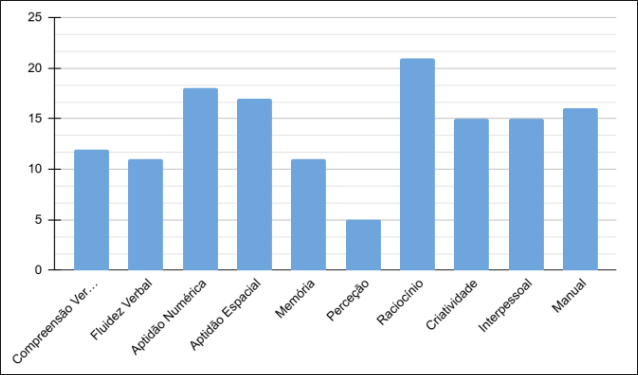

Sobre mim:
Sou estudante com foco atual em Linux e programação em C, áreas que tenho explorado com entusiasmo nos últimos meses. Embora tenha experiência com desenvolvimento web (JavaScript, HTML e CSS), esse conhecimento tem servido principalmente para fortalecer minha base como programador, e não como caminho profissional.
Tenho utilizado Linux como meu sistema operacional principal no dia a dia, o que tem me proporcionado familiaridade com a linha de comando, organização do sistema e gerenciamento de pacotes — ainda que de forma não aprofundada, voltada ao uso pessoal.
Um dos meus projetos de destaque é um site que criptografa palavras em emojis e um quiz sobre bactérias, utilizando minhas habilidades em JavaScript, HTML e CSS. Outro projeto de destaque é uma calculadora, feita em C, que executa contas matemáticas básicas.
Atualmente, busco aprofundar meus conhecimentos em sistemas, linguagens de baixo nível e conceitos fundamentais da computação, com interesse acadêmico e profissional em ciência da computação ou engenharia de computação.
Competências
- JavaScript (Básico)
- HTML e CSS (Básico)
- C (Básico)
- Experiência com Arduino
- Experiência com Linux (4 meses)
Projetos:
- LumityCode
- Quiz sobre antibióticos e Resistência Bacteriana
- Este Portfólio :D
Meu GitHub
Escolas e Cursos Possíveis
- Escola Secundária de José Régio
- Desenvolvedor de Software
- Arquiteto de Software
- Administrador de Banco de Dados
Aptidões Pessoais
O gráfico abaixo ilustra meu desempenho em áreas como raciocínio lógico e aptidão numérica, competências diretamente relacionadas às exigências de cursos e profissões em ciência da computação e engenharia de computação. Esses resultados reforçam a coerência das escolhas educacionais e profissionais que venho considerando.
